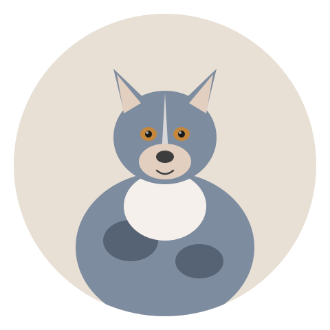

The most returned herding breed. Here's why. | 2026-06-20 · MeltPet · 5 min read
Last updated: 2026-06-22

The blue merle coat that sells puppies — and the nuclear-powered brain underneath.
Kip Learned to Open the Refrigerator. Then He Taught the Other Dog.
An Australian Shepherd named Kip lives three streets over from me. His owner, Erin, is a veterinarian —which is the only reason Kip is alive and not in a shelter. In his first two years, Kip figured out how to: open lever-handle doors by jumping on the handle, open the refrigerator by pulling a towel tied to the handle, unlatch his crate from the inside, turn on the motion-activated faucet in the bathroom (he drinks from it), and teach the family's other dog, a placid Lab mix, to act as a step stool so Kip could reach the kitchen counter. Erin came home one day to find Kip standing on the Lab's back, eating butter off the counter.
Australian Shepherds are not the most popular herding breed —Labs and Goldens out-register them every year —but they might be the most purchased by people who have no business owning one. Their blue eyes and merle coats sell puppies. Their intelligence destroys homes. The gap between the Instagram Aussie and the reality is a canyon.
You Bought a Sports Car and You're Driving It to the Mailbox
Aussies were bred to work livestock across open terrain for 10–12 hours a day. Not walk. Work. The breed's brain was designed to track moving animals, anticipate their direction, and make split-second decisions —all while running at full speed. When you put that brain in a suburban house with a 30-minute daily walk, the brain doesn't turn off. It looks for a new job.
The jobs an unemployed Aussie invents include: herding the children (nipping at their heels to keep them in one corner of the yard), enforcing curfew on squirrels, monitoring all household activity from a central vantage point, and reacting to every single thing that moves past the window. This last one —reactivity —is the behavior that drives most Aussies to shelters. The dog wasn't bred to ignore fast-moving objects. She was bred to notice them and respond. In a pasture, that meant tracking a stray sheep. In a suburb, it means lunging at every bicycle, skateboard, and jogger that passes within 50 feet.
The Exercise Equation That Works
An Aussie needs at least 90 minutes of vigorous exercise daily. Two hours is better. But physical exercise alone isn't enough. You cannot out-run an Australian Shepherd. The more you run her, the fitter she gets, and the fitter she gets, the more running she needs. You're training a marathoner, not tiring her out.
Mental work is what actually settles an Aussie's brain. Scent work —hiding a target odor and having the dog find it —uses the same neural circuitry as herding and is exhausting in 20 minutes. Advanced obedience or trick training —teaching a chain of 8–10 behaviors in sequence —requires so much concentration that the dog will nap afterward. Agility, herding trials, flyball, disc dog competitions —any structured activity where the dog is working in partnership with you, using her brain and her body simultaneously. A 30-minute agility session or a 45-minute scent work class does more for an Aussie than a two-hour hike. Both is ideal. The mental work is non-negotiable.
Health: The MDR1 Thing and the Rest
About 50% of Australian Shepherds carry at least one copy of the MDR1 gene mutation, which makes them sensitive to a long list of common drugs —ivermectin (in some heartworm preventives), loperamide (Imodium, for diarrhea), and several chemotherapy agents and sedatives. At normal doses, these drugs cross the blood-brain barrier in MDR1-affected dogs and cause neurological toxicity —tremors, seizures, coma. The DNA test is simple and every Aussie should be tested. If your dog has the mutation, your vet needs to know before prescribing anything.
Also on the list: hip dysplasia (OFA scores on both parents), epilepsy (Australian Shepherds have a higher rate of idiopathic epilepsy than most breeds), and cataracts and progressive retinal atrophy (annual eye exams by a veterinary ophthalmologist for breeding dogs). Double merle breeding —breeding two merle dogs together —produces puppies that are often deaf and/or blind. Any breeder who does this intentionally should be avoided. Any breeder who "didn't know" the risks shouldn't be breeding.
Are You Actually an Aussie Person?
You're an Aussie person if: you want a dog who will learn anything you teach in two repetitions and then get bored and ask for something harder. If you run, hike, bike, or do dog sports. If you're home enough that the dog isn't alone for 10 hours. If "high-maintenance" sounds like a feature. If you want a dog who looks at you like a partner, not a food source.
You're not an Aussie person if: you work full-time outside the home, your exercise plan is a walk around the block, you want a dog who greets strangers without suspicion, or you just really like the blue eyes and figured you'd make it work. That last one gets more Aussies surrendered than any disease. They're spectacular dogs. They're also a second job. If you wanted a hobby, get a different breed.
📚 Sources
Washington State University VCPL.MDR1 Gene Mutation —Affected Breeds. vcpl.vetmed.wsu.edu
Australian Shepherd Club of America.Health & Genetics. asca.org